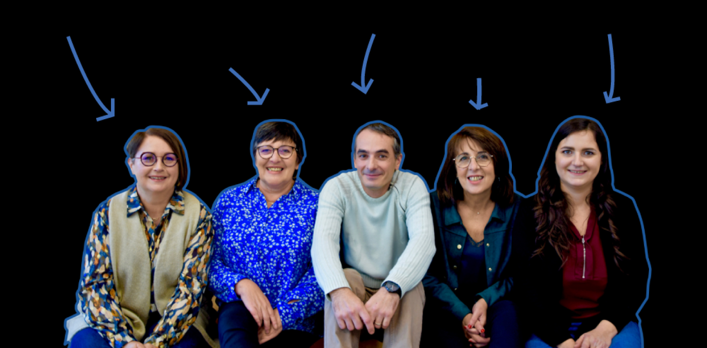
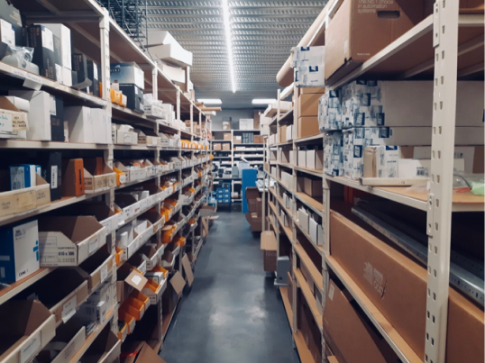

Grossiste en matériel de motorisation de portail et contrôle d'accès
Prix - Stock - Conseils - Services

Vos interlocuteurs, techniques et commerciaux
Quelques chiffres :
22ans d'expérience
8collaborateurs
13 000produits en stock
Le mot de la présidente
Au service des professionnels de la fermeture
Créée en 1999 par un artisan installateur de portail, PRO2S est une
entreprise familiale
dirigée depuis le 1er janvier 2022 par Mathilde PELLET, fille du créateur.
Aujourd'hui PRO2S c'est :
Le plus gros stock de télécommandes et récepteur radio toutes marques.
Les kits et pièces détachées en stock des marques :
CAME, FAAC-GENIUS, NICE et POWERTECH (en stock ici)
Le contrôle d'accès :
INTRATONE, NORALSY, IZYX, VIRO (en stock ici)
Les interphones :
AIPHONE, GOLMAR (en stock ici)
Toutes les notices et les catalogues des fabricants sont à disposition de nos clients directement sur
notre site internet.
La présidente, Mathilde Pellet.
PRO2S en 2022 :

Stock :
Pour faire correctement notre travail de grossiste, nous avons fait le choix de
renforcer
significativement notre stock, ce qui nous permet de livrer nos clients en 24/48h pour la plupart des
produits proposées
sur notre site internet.
Innovation :
Le Smartphone 2022 remplace les télécommandes, fait de la vidéo-surveillance et
reçoit les appels
depuis son interphone.Nous testons et évaluons tous les nouveaux produits avant de les proposer à
nos clients professionnels.